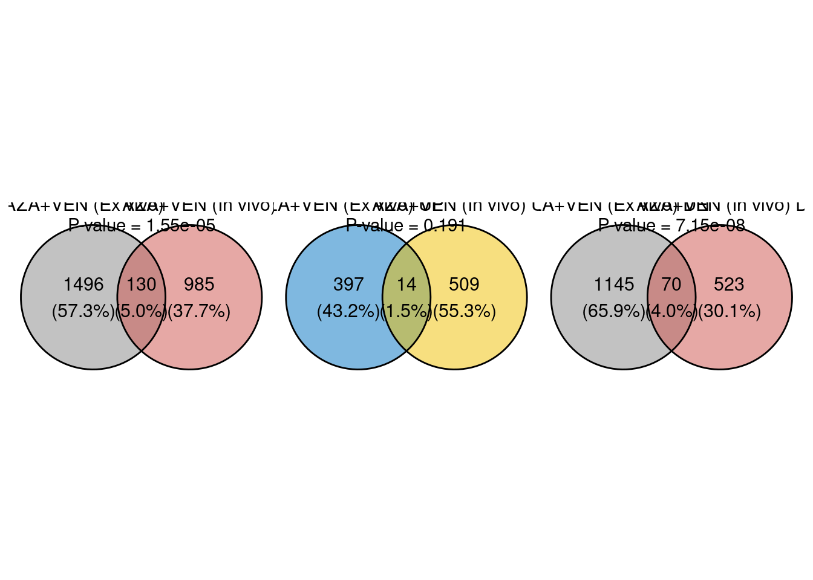

3.5 Venn plot
library(ggvenn)
library(patchwork)
# Function to create Venn diagram and perform hypergeometric test
create_venn_plot <- function(gene_list1, gene_list2, labels, colors, N) {
# Convert to vectors and remove NAs and duplicates
gene_list1 <- na.omit(unique(as.vector(gene_list1)))
gene_list2 <- na.omit(unique(as.vector(gene_list2)))
# Print the lengths of the gene lists
cat("Length of", labels[1], ":", length(gene_list1), "\n")
cat("Length of", labels[2], ":", length(gene_list2), "\n")
# Check if gene lists are not empty
if (length(gene_list1) == 0 || length(gene_list2) == 0) {
warning("One or both gene lists are empty. Cannot create Venn diagram.")
return(NULL)
}
# Create a list of gene sets and assign names
gene_lists <- list(gene_list1, gene_list2)
names(gene_lists) <- labels
# Create Venn diagram
venn_plot <- ggvenn(
gene_lists,
fill_color = colors,
stroke_size = 0.5,
set_name_size = 4,
auto_scale = FALSE
)
# Calculate sizes and overlap
geneset1_size <- length(gene_list1)
geneset2_size <- length(gene_list2)
overlap <- length(intersect(gene_list1, gene_list2))
# Print overlap information
cat("Overlap between", labels[1], "and", labels[2], ":", overlap, "genes\n")
# Perform hypergeometric test
p_value <- phyper(
overlap - 1,
geneset2_size,
N - geneset2_size,
geneset1_size,
lower.tail = FALSE
)
# Add p-value annotation to the plot
venn_plot <- venn_plot + annotate(
"text",
x = 0,
y = 1,
label = paste0("P-value = ", signif(p_value, 3)),
colour = "black"
)
# Return the plot
return(venn_plot)
}
# Define total number of genes in the background (e.g., human genome)
N <- 20000
## Gene lists for DEGs
degs_list1 <- degs1$Symbol
degs_list2 <- degs2$Symbol
## Labels and colors for DEGs
labels_degs <- c("AZA+VEN (Ex vivo)", "AZA+VEN (In vivo)")
colors_degs <- c("#868686FF", "#CD534CFF")
p0 <- create_venn_plot(degs_list1, degs_list2, labels_degs, colors_degs, N)## Length of AZA+VEN (Ex vivo) : 1626
## Length of AZA+VEN (In vivo) : 1115
## Overlap between AZA+VEN (Ex vivo) and AZA+VEN (In vivo) : 130 genes## Gene lists for up-regulated genes
degs_up_list1 <- degs_up$Symbol
degs_up_list2 <- degs_up2$Symbol
## Labels and colors for up-regulated genes
labels_up <- c("AZA+VEN (Ex vivo) UP", "AZA+VEN (In vivo) UP")
colors_up <- c("#0073C2FF", "#EFC000FF")
## Create up-regulated gene Venn diagram
p1 <- create_venn_plot(degs_up_list1, degs_up_list2, labels_up, colors_up, N)## Length of AZA+VEN (Ex vivo) UP : 411
## Length of AZA+VEN (In vivo) UP : 523
## Overlap between AZA+VEN (Ex vivo) UP and AZA+VEN (In vivo) UP : 14 genes## Gene lists for down-regulated genes
degs_down_list1 <- degs_down$Symbol
degs_down_list2 <- degs_down2$Symbol
## Labels and colors for down-regulated genes
labels_down <- c("AZA+VEN (Ex vivo) DN", "AZA+VEN (In vivo) DN")
colors_down <- c("#868686FF", "#CD534CFF")
## Create down-regulated gene Venn diagram
p2 <- create_venn_plot(degs_down_list1, degs_down_list2, labels_down, colors_down, N)## Length of AZA+VEN (Ex vivo) DN : 1215
## Length of AZA+VEN (In vivo) DN : 593
## Overlap between AZA+VEN (Ex vivo) DN and AZA+VEN (In vivo) DN : 70 genesplots <- p0 | p1 | p2
print(plots)
## Save the plots to a PDF file
# ggsave(plots, filename = "../03.out/figure1/05.vennPlots.pdf", width = 9, height = 3)